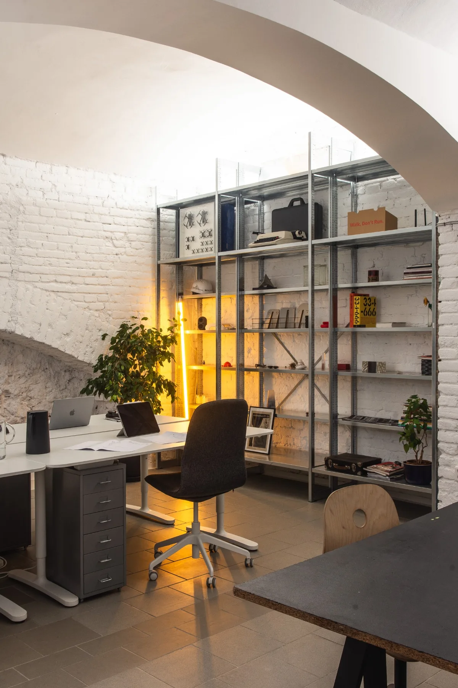
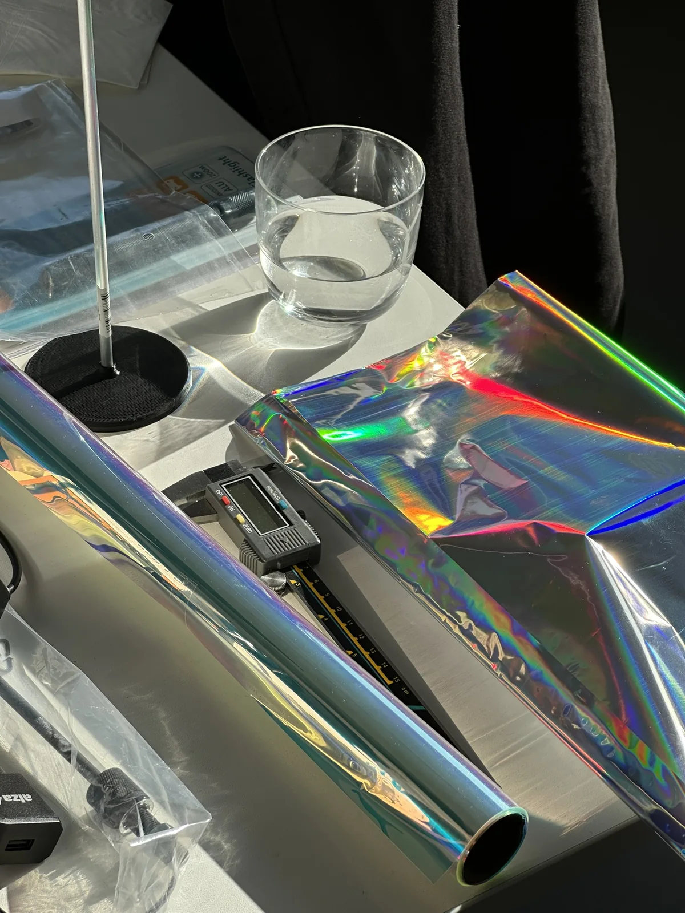
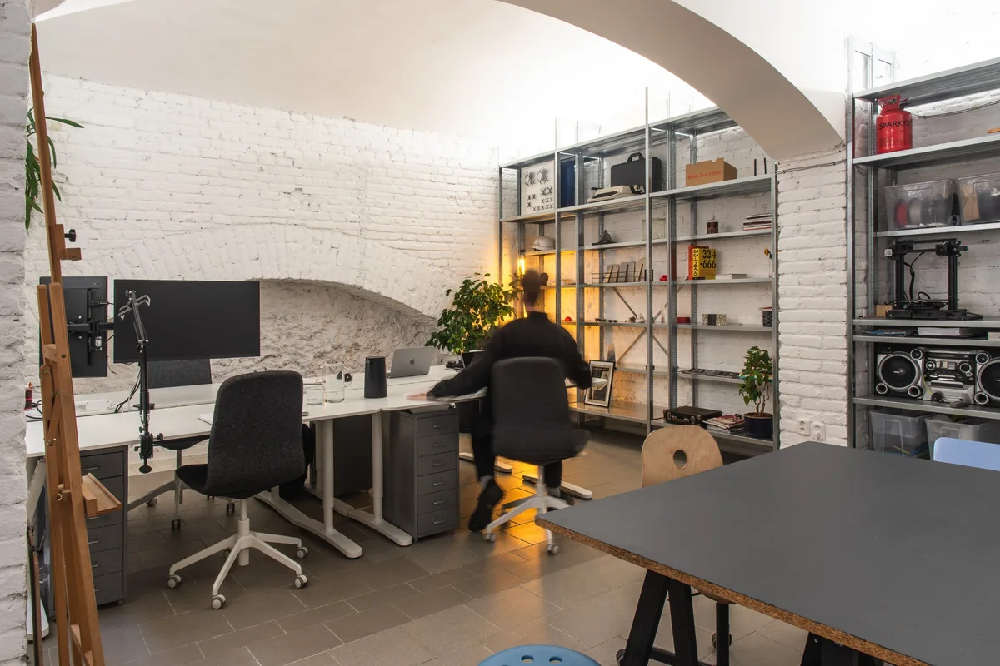
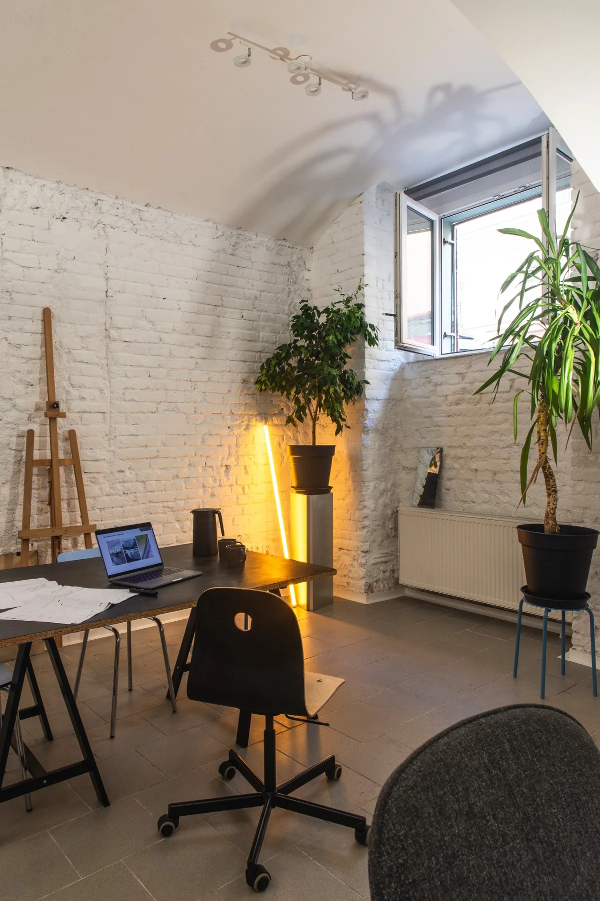

Sdílený ateliér.
Pod jednou klenbou.
A shared studio. Under one roof.
CZPekárna je sdílený ateliér na Letné, v pražských Holešovicích. Pracovní prostor pro architekty, designéry a další tvůrce. Každý svoje, ale s lidmi, se kterými můžeš probrat nápad u vedlejšího stolu.
ENPekárna is a shared studio in Letná, part of Holešovice in Prague 7. A creative workspace for architects, designers and other makers. Work on your own projects, with someone at the next desk to share an idea with.

Od obrazovky
k materiálu.
From screen to material.
CZCoworking i makerspace. Potkávají se tu architektura, design a vlastní dílny. Někdy celý den u monitoru, jindy ruce v materiálu. Místo pro návrhy, modely, prototypy i soustředěnou práci.
ENCreative coworking and a makerspace, bringing together architecture, design and individual workshops. A place to co-work, make and experiment. Some days on screen, others hands-on with models and prototypes.


